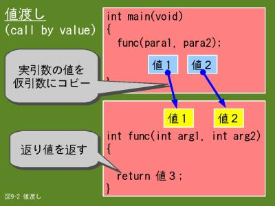
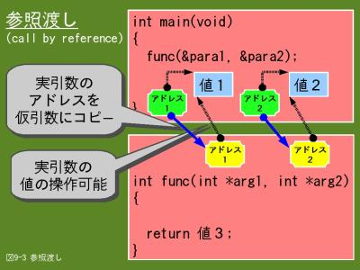
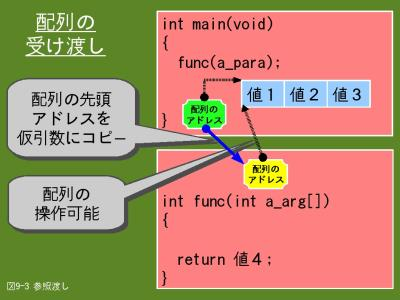

9.3 関数間のデータの受け渡し
関数間のデータの受け渡しは前のページで簡単に説明した通り、通常、引数と返り値を使用します。このうち、引数を使ったデータの受け渡しについては２つの方法が有ります。ここでは主に、引数を使ったデータの受け渡しについて説明します。
9.3.1 値をコピーして渡す
- 
- 【図９-２】値渡し（call by value）
引数を使ったデータの受け渡しの１つ目は、図9-2に示す値渡し（call by value）と呼ばれている方法です。前ページの例題プログラムは全て値渡しを使っています。
main関数でfunc関数を呼び出していますが、実引数として、変数para1とpara2を指定しています。そうすると、この２つの変数の値がfunc関数の仮引数用の変数arg1とarg2にコピーされます。これにより、変数para1とpara2の値が変数arg1とarg2に渡っていったことになります。
この方法の利点は実引数と仮引数がまったく別の変数になりますので、func関数で仮引数の変数arg1の値を変更しても、main関数の実引数の変数para1の値は影響を受けません。他の関数からの影響を少なくできますので、変数の誤操作による不良が少なくなる可能性が有ります。ただし、func関数からmain関数に引数を使って値を返すことは出来ませんので、値を返したい場合は返り値を使うしか方法はありません。
返り値はreturn文で簡単に返せますが、返せる値は１つだけです。
9.3.2 値をポインタで渡す
- 
- 【図９-３】参照渡し（call by reference）
引数を使ったデータの受け渡しの２つ目は、図9-3に示す参照渡し（call by reference）と呼ばれている方法です。
func関数の呼び出しで実引数として変数para1とpara2の先頭アドレスを指定しています。（アドレス演算子（&）を使っていることに注目してください。）
func(¶1, ¶2);
一方、func関数の仮引数の変数arg1とarg2はポインタ変数として宣言しています。
int func(int *arg1, int *arg2)
これにより、実引数の変数para1とpara2の先頭アドレスが仮引数の変数arg1とarg2にコピーされて、間接的に変数para1とpara2の値がfunc関数に渡っていったことになります。func関数での変数para1とpara2の値の操作は間接参照演算子（*）を使って、次のように行います。
v1 = *arg1; ← 参照（変数para1の値を変数v1に代入します）
*arg1 = *arg2 + 10; ← 更新（変数para2の値に10を加算した結果を変数para1に代入します）
参照渡しの場合、実引数の参照だけでなく更新も行うことが出来ます。更新が出来るということは呼出し元に値を返すことが出来るということになります。参照渡しの利点は引数を使って複数の値を呼び出し元に返すことが出来るということです。ただし、変数の誤操作による不良が発生する可能性が有りますので、注意して使ってください。
参照渡しは例題プログラムで既に使っています。scanf関数で入力する場合、入力データを受け取る変数（実引数）はアドレス演算子を指定していましたが、これはscanf関数からデータを返してもらうために参照渡しをしているためです。
9.3.3 配列の受け渡し
- 
- 【図９-４】配列の受け渡し
配列名はその配列の先頭アドレスを値としてもつポインタの定数ですので、実引数に配列名を指定すると、参照渡しになります。従って、呼び出された関数から呼び出し元の配列の更新が出来ます。
図9-4ではmain関数に配列a_paraが有り、func関数の呼び出しで実引数に配列名のa_paraを指定しています。
func(a_para); ← a_paraは配列です
これにより、配列a_paraの先頭アドレスがfunc関数の仮引数a_argにコピーされます。a_argは配列として宣言していますので、添字を使って操作が可能です。
v1 = a_arg[1]; ← 参照（配列a_paraの２番目の要素の値を変数v1に代入します）
a_arg[2] = v1; ← 更新（変数v1の値を配列a_paraの３番目の要素に代入します）
また、間接参照演算子（*）を使って、参照・更新を行うこともできます。（こちらの方法を使う場合は仮引数の宣言もポインタで行った方がプログラムが理解しやすくなるでしょう）
v1 = *(a_arg + 1); ← 参照（配列a_paraの２番目の要素の値を変数v1に代入します）
*(a_arg + 2) = v1; ← 更新（変数v1の値を配列a_paraの３番目の要素に代入します）
なお、実引数に配列の１要素だけを指定する場合は値渡しになります。ちょっとした違いですがインターフェース上は大きく異なりますので注意して下さい。
/* main関数のfunc関数の呼出し*/
func(a_para[0]); ← 実引数として配列a_paraの先頭要素の値を指定しています
/* func関数の定義 */
int func(int arg1) ← 実引数の値をint型の変数として受け取ります
9.3.4 例題
例題１
肥満度(BMI)と、その値の範囲が正常か否かを出力するプログラムです。CalcBmi関数はdouble型の体重と身長を引数として受け取り、肥満度を返り値として返すと共に、正常か否かを引数で返します。
#include <stdio.h>
int main(void)
{
double weight;
double height;
double bmi;
char judge;
int return_code;
/* CalcBmi関数のプロトタイプ宣言 */
double CalcBmi(double BmiWeight, double BmiHeifht, char *BmiJudge);
printf("肥満度(BMI)の計算を行います\n");
printf("体重(kg)と身長(cm)を入力してください ==> ");
scanf("%lf%lf", &weight, &height);
bmi = CalcBmi(weight, height, &judge); /* 肥満度(BMI)を返り値として取得 */
if(bmi > 0.0)
{
printf("肥満度は%.2fです。", bmi);
switch(judge)
{
case 'n':
printf("正常です。\n");
break;
case 'l':
printf("低すぎます。\n");
break;
case 'h':
printf("高すぎます。\n");
break;
default:
printf("\n");
}
return_code = 0;
}
else
{
printf("入力した値が不当です\n");
return_code = 1;
}
return return_code;
}
/* 体重と身長を元に肥満度(BMI)の計算を行iい、正常かどうかの判定を行う*/
double CalcBmi(double pWeight, double pHeight, char *pJudge)
{
double bmi;
/* 体重と身長の値をチェック */
if (pWeight > 0.0 && pHeight > 0.0)
{
/* 身長をセンチメートルからメートルに変換 */
pHeight = pHeight / 100.0;
/* 肥満度(BMI) = 体重(kg) / 身長(m) / 身長(m) */
bmi = pWeight / pHeight / pHeight;
/* 肥満度が18.5〜25.5の範囲であれば正常 */
if(bmi >= 18.5 && bmi <= 25.0)
{
*pJudge = 'n'; /* 正常 */
}
else
{
if(bmi > 25.0)
{
*pJudge = 'h'; /* 高い */
}
else
{
*pJudge = 'l'; /* 低い */
}
}
}
else
{
bmi = 0.0;
*pJudge = ' ';
}
return bmi; /* 肥満度(BMI)を返り値として返す */
}
$ ./ex09_4.prg
肥満度(BMI)の計算を行います
体重(kg)と身長(cm)を入力してください ==> 71.5 174.5
肥満度は23.48です。正常です。
$
$ ./ex09_4.prg
肥満度(BMI)の計算を行います
体重(kg)と身長(cm)を入力してください ==> 71.5 163.5
肥満度は26.75です。高すぎます。
$
- 10行目
- CalcBmi関数の第３引数をポインタとして宣言します。つまり、参照渡しになります。
- 16行目
- CalcBmi関数の第３引数は参照渡しですので、変数judgeにアドレス演算子（&）を付けることにより、変数judgeの先頭アドレスを指定します。
- 20行目
- CalcBmi関数により、変数judgeに肥満度の値が正常か否かが文字として設定されていますので、その文字により結果を出力します。（変数judgeの値が'n'は正常、'l'は低すぎる、'h'は高すぎることを表します）
- 46行目
- CalcBmi関数の第３引数は参照渡しですので、ポインタとして宣言します。
- 60、66、70行目
- 第３引数のpJudgeに間接参照演算子（*）を付けることにより、呼び出し元の変数judgeに肥満度の値が正常か否かの文字を設定します。
例題２
入力した半角文字列をStrRev関数で逆順にして出力します。StrRev関数は引数で指定した文字列を逆順にして返すと共に、文字数を返り値として返します。（入力文字は半角で100文字以下とし、スペースやタブ等の空白文字は含みません）
#include <stdio.h>
int main(void)
{
char a_rev[101];
int length;
int return_code;
/* StrRev関数のプロトタイプ宣言 */
int StrRev(char Rev[]);
printf("文字列を入力してください ==> ");
scanf("%s", a_rev);
length = StrRev(a_rev);
if(length > 0)
{
printf("逆順：%s\n", a_rev);
return_code = 0;
}
else
{
printf("逆順にできません\n");
return_code = 1;
}
return return_code;
}
/* 引数の文字列を逆順にして、文字数を返す */
int StrRev(char pRev[])
{
int cur_index;
int rev_index;
int length;
char save_char;
/* 文字列の最後の文字を探す */
for(rev_index = 0;
pRev[rev_index] != '\0' && rev_index <= 100;
++rev_index)
;
if(rev_index >= 1 && rev_index <= 100)
{
length = rev_index; /* 文字数設定 */
--rev_index;
/* 文字の入れ替え */
for(cur_index = 0; cur_index < rev_index; ++cur_index)
{
save_char = pRev[cur_index];
pRev[cur_index] = pRev[rev_index];
pRev[rev_index] = save_char;
--rev_index;
}
}
else
{
length = 0;
}
return length; /* 文字数を返り値として返す */
}
$ ./ex09_5.prg
文字列を入力してください ==> HelloWorld.
逆順：.dlroWolleH
$
- 8行目
- StrRev関数のプロトタイプ宣言です。引数はchar型の配列（文字列）です
- 13行目
- 実引数に入力した文字列（配列a_rev）を指定してStrRev関数を呼び出します。逆順にした文字列は実引数に指定した配列a_revに返り、返り値として文字数が返ります。
- 29行目
- StrRev関数の仮引数は配列で、返り値はint型です。
- 38行目
- 文字列の最後までカウントしていきます。文字数は最大100文字とします。
- 48〜50行目
- 文字列を逆順にするために、後ろの文字と入れ替えます。
例題３
例題２と同じ機能ですが、StrRev関数の文字列を取り扱う部分をポインタで記述しました。
#include <stdio.h>
int main(void)
{
char a_rev[101];
int length;
int return_code;
/* StrRev関数のプロトタイプ宣言 */
int StrRev(char Rev[]);
printf("文字列を入力してください ==> ");
scanf("%s", a_rev);
length = StrRev(a_rev);
if(length > 0)
{
printf("逆順：%s\n", a_rev);
return_code = 0;
}
else
{
printf("逆順にできません\n");
return_code = 1;
}
return return_code;
}
/* 引数の文字列を逆順にして、文字数を返す */
int StrRev(char *pRev)
{
char *p_cur;
char *p_rev;
int length = 0;
char save_char;
/* 文字列の最後の文字を探す */
for(p_rev = pRev;
*p_rev != '\0' && p_rev <= (pRev + 100);
++p_rev)
{
++length; /* 文字数カウント */
}
if(p_rev > pRev && p_rev <= (pRev + 100))
{
--p_rev;
/* 文字の入れ替え */
for(p_cur = pRev; p_cur < p_rev; ++p_cur)
{
save_char = *p_cur;
*p_cur = *p_rev;
*p_rev = save_char;
--p_rev;
}
}
else
{
length = 0;
}
return length; /* 文字数を返り値として返す */
}
- 29行目
- 仮引数をchar型のポインタで宣言します。
- 37行目
- 添字の代わりにポインタを使います。以降、すべてポインタの演算を使います。